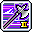
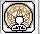

基本介紹
職業分類：英雄團、劍士類別
主屬性：力量
主武器：矛（雙手武器）
操作需求：指令發動技能，部分技能亦可設置快捷鍵發動
優勢
1.高複數攻擊
2.順暢的打擊與跑圖
3.爆發式的輸出
4.自身可達頂速
5.精簡的按鍵配置
弱勢
1.操作困難
2.極度不平衡的輸出
3.段數低
傳授技能
連續擊殺優勢：
1.額外增加combo經驗珠的經驗值__%（Level 1增加400%、Level 2增加650%）
2.在分身等級低的時候效果十分顯著，搭配精靈和龍魔的傳授技能可以令練等更加快速。
新手技能
戰鬥衝刺【指令技能】： 增加移速15。並可以二段跳躍，或是衝刺一段距離
回歸瑞恩: 立即移動到瑞恩島，冷卻時間5分鐘
聯盟的意志【任務取得︰狂狼主線任務】： 全屬性+5、攻擊力+5
英雄的回響【200等獲得】: 40分鐘內，自身和周圍玩家的物/魔攻+4%
一轉技能
粉碎震撼： 每個擺擊造成150%×2傷害，共3個擺擊，攻擊6位敵人，可以用連打或是按壓攻擊鍵來發動
矛之鬥氣： 被動效果：格檔率+50%。每50 combo攻擊力+2、防禦+20、移動速度+3，最高疊加10次
猛擲之矛【指令技能】: 500%傷害，攻擊6位敵人
 強化連擊【開關技能】【無法消技】： 500%傷害「撞擊」敵人
強化連擊【開關技能】【無法消技】： 500%傷害「撞擊」敵人
神速之矛： 200秒內攻擊速度+2階段
二轉技能
終極研究 I：
傷害+200%p，增加攻擊時移動速度 使用
後，2秒內使用其他技能最終傷害+10% 使用
後，使用其他技能時產生100%×2額外傷害攻擊4位敵人
動力精通 I: 使用指令發動技能，傷害+5%p
挑飛【指令技能】： 550%傷害，攻擊並使10位敵人浮空，同時角色跳躍。攻擊浮空敵人傷害+100%p *指令效果：跳躍距離增加
突刺之矛【指令技能】: 300%傷害，推動10位敵人 *指令效果：使敵人暈眩10秒
旋風斬【指令技能】： 555%×3傷害，攻擊並使10位敵人浮空 *指令效果：使敵人暈眩5秒
寒冰屬性： 被動效果：傷害+10%。200秒內，攻擊可使敵人移動速度－40持續20秒，攻擊速度降低之敵人傷害+10%，
吸血術【開關技能】【無法消技】: HP+10%，攻擊時可恢復最大HP的2%
精準之矛： 熟練度至50%、攻擊速度+1階段
 終極攻擊： 攻擊時有40%機率額外造成150%傷害
終極攻擊： 攻擊時有40%機率額外造成150%傷害
體能訓練： 力量+30、敏捷+30
三轉技能
 進階矛之鬥氣： 被動效果：格檔率+50%、攻擊力+10、抗性+40、爆擊率+20%、爆擊傷害+10% 強化
：每50 combo追加攻擊力+2( 含一轉共+4 )、爆擊率+3%，最高疊加10次 集各項能力於一身的加持技能。
進階矛之鬥氣： 被動效果：格檔率+50%、攻擊力+10、抗性+40、爆擊率+20%、爆擊傷害+10% 強化
：每50 combo追加攻擊力+2( 含一轉共+4 )、爆擊率+3%，最高疊加10次 集各項能力於一身的加持技能。
 空中震撼： 可以在空中使用
，且傷害+100%p
空中震撼： 可以在空中使用
，且傷害+100%p
鬥氣爆發： 被動效果：所有技能傷害+100%p。達到1000 combo時進入此狀態，15秒內所有技能傷害+150%p 攻擊段數+2、攻擊敵人數量+5。結束後回到500 combo。技能不受buff加持時間效果影響。
最終之矛【指令技能】： 285%×5傷害，攻擊6位敵人，無視防禦15%。學習此技能後，
的第三下自動變成 *指令效果：使用技能時，被敵人攻擊絕對不會被震退 *時：額外產生350%×4傷害的衝擊波，攻擊6位敵人
一網打盡【指令技能】： 170%×2傷害，攻擊並聚集10位敵人於前方，冷卻時間5秒
鬥氣審判【指令技能】： 380%×4傷害，攻擊並使10位敵人浮空，且在6秒內每秒產生200%的結凍傷害 *指令效果：控制冰斧落下方向，敵人將結凍10秒
瑪哈祝福： 200秒內，全隊物理/魔法攻擊力+20
釘錘： 攻擊力+10、防禦+215，且擊退敵人所需的數值降低成原數值的10%
攀爬 攻擊： 無視防禦40%、傷害+10%
四轉技能
終極研究 II： 強化
，傷害+250%p，增加攻擊時移動速度 使用
後，4秒內使用其他技能最終傷害+15% 使用
後，使用其他技能時，會產生350%×4額外傷害攻擊4位敵人 且
的第二下與第三下自動變成
動力精通 II： 使用指令發動技能，傷害+20%p
比耀德【指令技能】： 285%×5、300%×5、315%×5傷害，攻擊6位敵人，必定爆擊且無視防禦30%，攻擊敵人每少1位傷害+6% ( 攻擊單一敵人傷害+33% )，攻擊期間絕不震退 *
時：額外向左右產生400%×5傷害的衝擊波，攻擊6位敵人
極限巔峰－目標鎖定【指令技能】： 1500%×15傷害，攻擊1位敵人且向目標移動。指令發動後持續按壓住攻擊鍵來蓄力，每一秒傷害+100%p 最多傷害+500%p，蓄力期間無敵且可以選擇目標 *只能在
下使用，且只能用指令發動1次
 極限巔峰－恐懼風暴【指令技能】： 持續10秒攻擊12位敵人，指令發動後壓住攻擊鍵持續暴風，將範圍內的敵人吸進暴風裡造成650%傷害 攻擊時可左右移動 *只能在
下使用，且只能用指令發動1次
極限巔峰－恐懼風暴【指令技能】： 持續10秒攻擊12位敵人，指令發動後壓住攻擊鍵持續暴風，將範圍內的敵人吸進暴風裡造成650%傷害 攻擊時可左右移動 *只能在
下使用，且只能用指令發動1次
快速移動： 增加的技能傷害+60%p
攻擊戰術： 熟練度至70%、攻擊力+30、爆擊傷害+8%
防禦戰術： 所受到傷害-40%、HP+20%、防禦+300
進階終極攻擊： 攻擊力+30，攻擊時有60%機率額外造成250%傷害
楓葉祝福： 全屬性+15%
 楓葉淨化： 解除某些異常狀態
楓葉淨化： 解除某些異常狀態
超技能
擺動－強化傷害： 傷害+20%
擺動－時光殘像強化傷害： 使用後，其他技能傷害+20%
擺動－殘像強化： 使用後，使用其他技能時的殘影傷害+20%
恐懼風暴－臨時目標： 攻擊敵人數量+3
目標鎖定－強化傷害： 傷害+30%
鬥氣爆發－時間延續： 持續時間+5秒
比耀德－強化傷害： 傷害+20%
比耀德－攻擊加成： 攻擊次數+1
比耀德－無視防禦： 無視防禦+20%
腎上腺動力源【140等】: 立即進入狀態，冷卻240秒。無法在時或結束後的15秒內使用此技能
瑪哈的領域【160等】: 800%×5傷害，攻擊15位敵人，在10秒內每秒造成500%×3傷害，且在範圍內的隊員每秒解除異常狀態 和恢復HP與MP20%，冷卻150秒
英雄誓言【190等】: 60秒內傷害+10%，冷卻120秒
五轉技能
 瑪哈之疾: (Lv25)施放中才可使用。立即增加100 combo，55秒內攻擊力+30%，另外在攻擊時每3秒會產生 900%×5傷害的暴雪攻擊10位敵人，且暴雪攻擊體積增加88%。冷卻時間150秒
瑪哈之疾: (Lv25)施放中才可使用。立即增加100 combo，55秒內攻擊力+30%，另外在攻擊時每3秒會產生 900%×5傷害的暴雪攻擊10位敵人，且暴雪攻擊體積增加88%。冷卻時間150秒
 馬哈揮舞【指令技能】: (Lv25)以1800%×10的傷害攻擊15位敵人，對BOSS傷害＋20%，冷卻時間20秒。 在中使用此技能，冷卻時間－10秒
馬哈揮舞【指令技能】: (Lv25)以1800%×10的傷害攻擊15位敵人，對BOSS傷害＋20%，冷卻時間20秒。 在中使用此技能，冷卻時間－10秒
芬里爾墜擊【指令技能】: (Lv25)讓多出第四次打擊。以625%×6傷害，攻擊10位敵人，必定爆擊且無視防禦50%，攻擊敵人每 少1位傷害+6% ( 攻擊單一敵人傷害+68% )，攻擊期間絕不震退。與、連接使用將降低延遲。 *時：額外向前產生625%×6傷害的冰山攻擊，攻擊10位敵人 *與同樣套用超技能效果與強化核心效果